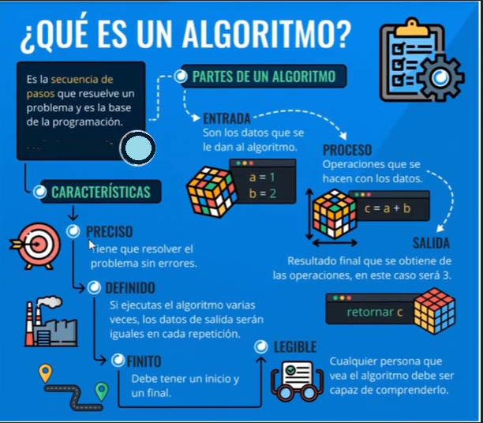
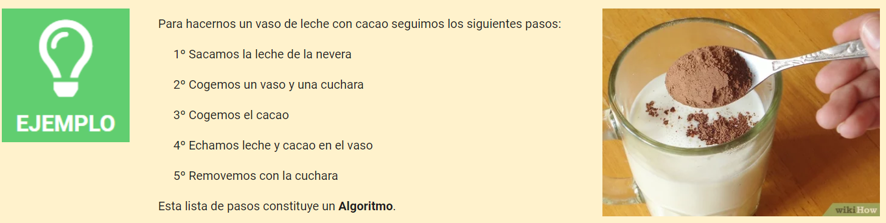
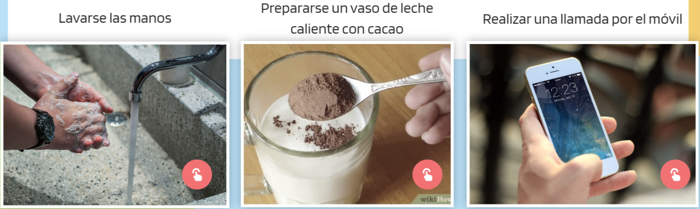
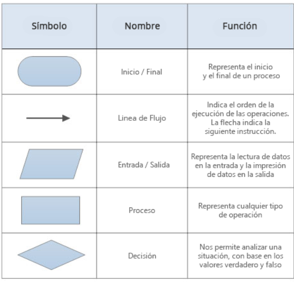
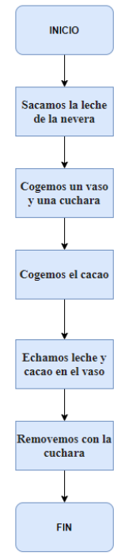

Algoritmos
Antes de programar cualquier tarea hay que diseñar un plan de trabajo que la resuelva por medio de pasos sencillos. Es lo que se conoce como algoritmo de resolución de la tarea.
| Un algoritmo es un conjunto de instrucciones sucesivas bien definidas que siguen un orden claramente indicado con el objetivo de resolver alguna tarea. Un programa informático está compuesto de varios algoritmos. |
Estas son las características principales de un algoritmo:
- Finito: un algoritmo siempre debe tener un final. Esto significa que después de seguir un número determinado de pasos, llegaremos a la solución o completaremos la tarea. Por ejemplo, al montar un juguete siguiendo las instrucciones, una vez que colocas la última pieza, el proceso termina.
- Definido: cada paso del algoritmo debe ser claro y específico, sin dejar lugar a dudas. Las instrucciones deben ser fáciles de entender y no deben generar confusión. Por ejemplo, si en una receta dice “añadir dos huevos”, sabemos exactamente cuánto y qué añadir.
- Preciso: el algoritmo debe indicar exactamente qué hacer en cada paso y en qué orden. No podemos cambiar el orden de los pasos al azar, porque podría afectar el resultado final. Siguiendo con la receta, si primero horneas el pastel antes de mezclar los ingredientes, no obtendrás el resultado deseado.
- Legible: cualquier persona que lea el algoritmo debe ser capaz de entenderlo.

A menudo utilizamos algoritmos en nuestra vida cotidiana para resolver algunos problemas, realizando un conjunto de tareas ordenadas.

La importancia de la planificación
La importancia de la planificación y de una correcta secuencia de acciones para realizar las tareas son fundamentales para encontrar la solución correcta al problema planteado.
¿Cómo hacer un sandwich?
Parece fácil dar las instrucciones para hacer un sandwich, pero en realidad no lo es.
Actividad 2: Algoritmos
¡Es tu turno!
Diseña un algoritmo para realizar las siguientes tareas:

Crea un Google docs con el título "Algoritmos" para llevar a cabo esta actividad. Posteriormente inserta la tarea en tu portfolio digital.
Representación de algoritmos: Diagramas de flujo
Los algoritmos pueden representarse de varias formas, con frases, como en el ejemplo anterior, mediante gráficos, etc.
Una de las maneras más habituales de representar algoritmos es mediante diagramas de flujo.
| Un diagrama de flujo es la representación gráfica, mediante símbolos geométricos, de la secuencia lógica de las instrucciones que sigue un algoritmo. Posteriormente se traduce a lenguaje de programación |
Para representar los diagramas de flujo correspondientes a diversos procesos debemos emplear una serie de símbolos distintos que, ordenados de arriba a abajo, expresan las órdenes a seguir.
Tabla de símbolos básicos utilizados en los diagramas de flujos

Veamos el diagrama de flujo del ejemplo anterior.

Actividad 3: Diagramas de flujo
¡Es tu turno!
Diseña el diagrama de flujo correspondientes a las siguientes tareas:
Crea un Google docs con el título "Diagramas de flujo" para llevar a cabo esta actividad. Posteriormente inserta la tarea en tu portfolio digital.
Un poco de ayuda
Para diseñar diagramas de flujo puedes utilizar la siguiente aplicación web: Diagrams
Si no quieres registrarte pulsa Decidir más tarde.